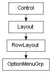

class cymel.ui.menu.OptionMenuGrp¶

-
class
cymel.ui.menu.OptionMenuGrp¶ ベースクラス:
cymel.ui.uitypes.RowLayoutmel UI の optionMenuGrp ラッパークラス。
withで setParent が行える。Methods:
UICMDgetValue()値を得る。 menu()OptionMenuを取得する。setValue(val)値をセットする。 Methods Details:
-
UICMD()¶
-
menu()¶ OptionMenuを取得する。戻り値の型: OptionMenu
-